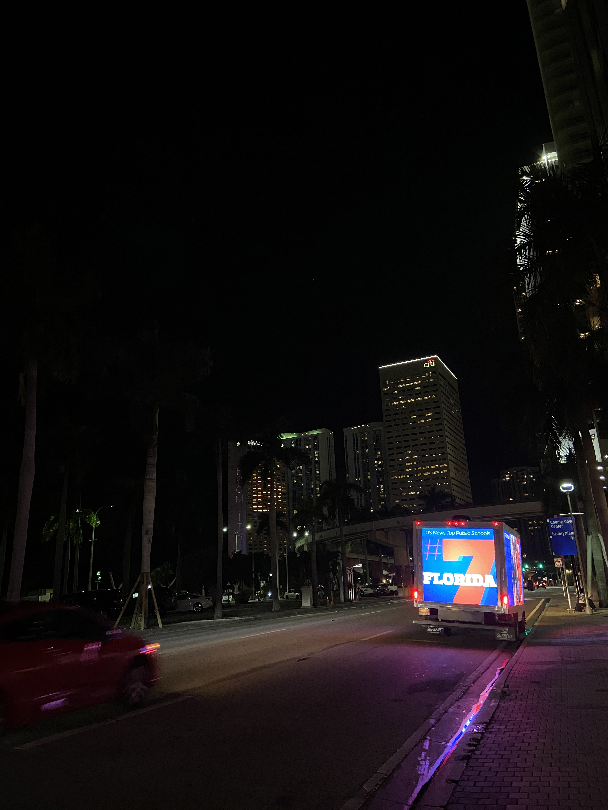

Social Media Leader · Menlo Park, CA
15 years of building communities that do something.
Inaugural Director of Social Media at two universities. Recognized in Wired and The Chronicle of Higher Education. The kind of work that ends up in a CDC study, a presidential office, and on a graduation cap.
Selected work
Greetings from Gainesville
A postcard activation that reached 41 states and 34 countries

Orange Bowl Blitz
LED trucks, billboards, and a duct-taped orange — 1.1M Twitter impressions in 24 hours

Gallery 1853
A hashtag that became a real art show — and permanent art in the President's Office

#GatorsWearMasks
81M impressions. 98% mask compliance. A CDC study confirmed it worked.

GIF Dominance
7 billion views — ahead of Google, Nike, and Facebook on Giphy

Tweet Race
Defeated Serena Williams. Raised $50K for St. Jude. Won a car on Twitter.

Let's talk.
15 years of building communities, launching platforms, and finding the unexpected angle. If you're looking for someone who's done it all — and has the receipts — I'd love to connect.